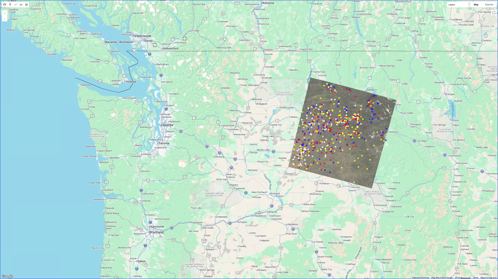
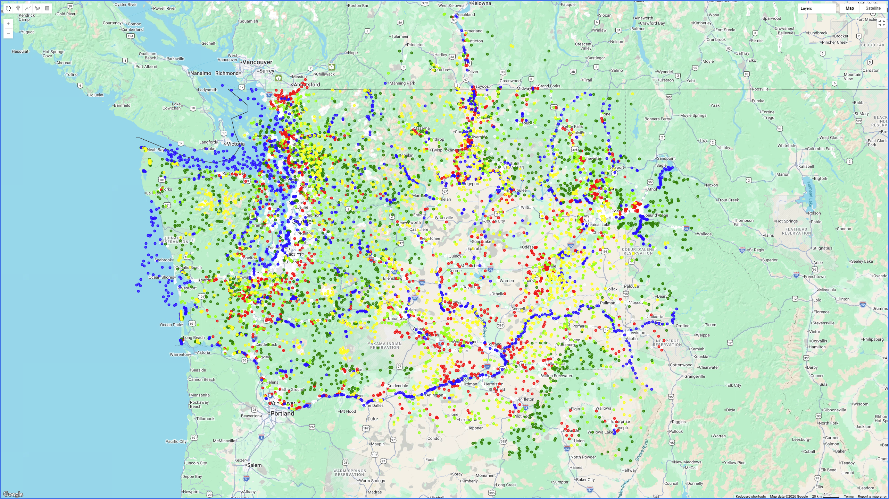
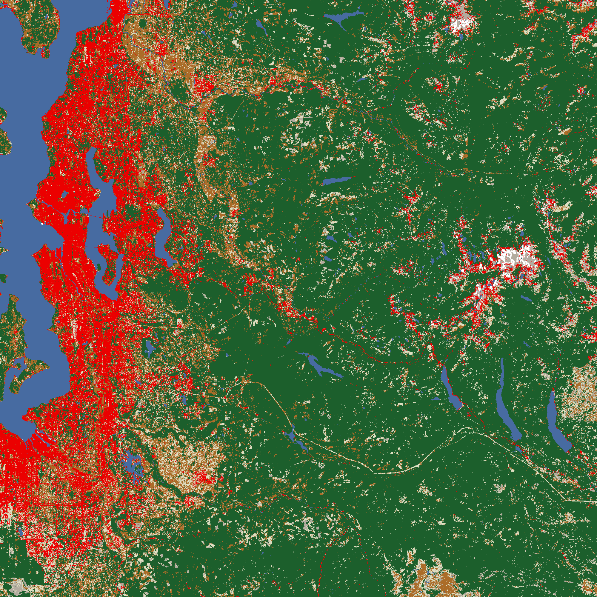
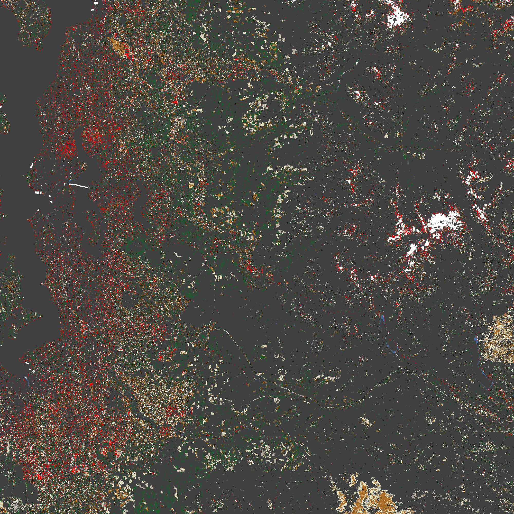

GitLab
GitLab
 GitHub
GitHub
 LinkedIn
LinkedIn
Map Gallery/Washington Land Cover Classification
(image)
In Spring 2025 I took GEOG 415: Spatial Data Science Futures with Dr. Bo Zhou in UCLA's MAGIST program. In the course we explored a range of remote sensing analysis workflows in Google Earth Engine, culminating in a collaborative final project. My classmates and I each digitized land cover ground truth for one Landsat footprint in Washington State and pooled our work into one training set for a random forest classifier. My footprint was WRS-2 path 43, row 27, which covers Spokane and the Palouse. The pooled set grew to 13 footprints and spans 2014 to 2024.
I completed my work for GEOG 415 in a private Google Earth Engine repository. I have since repackaged my scripts and refactored code with help from an LLM (Claude Opus 5.5), in particular by creating the shared
tools module and the 07_lulcMap script. All of the scripts are public in a Google Earth Engine repository, mirrored on GitHub. They are numbered in pipeline order, and each script's header still carries its original name from GEOG 415.
Scene selection, ground truth digitization
My classmates and I filtered Landsat 8 and 9 Collection 2 Level 2 imagery by path, row, and season to find cloud-free scenes for our assigned year (mine: 2024). I found four usable scenes in spring, five in summer, three in fall, and only one in winter.Google Earth Engine script:
01_sceneSelection
show script (GitHub)
Loading…Our goal was to digitize 150 points ("ground truth") per season, split across six classes: urban
1, agriculture 2, rangeland 3, forest 4, water 5, and barren 7. I divided each season's budget by its number of scenes, which came to 42 points per spring scene, 30 per summer scene, and 54 per fall scene. The single winter scene got 120 points. That made 600 points across 13 scenes.
In retrospect, my digitization scripts are clunky. Each point is written out by hand as its own
ee.Geometry.Point literal, one script per scene. Today I would draw the geometries in the Code Editor and import them, or at least loop over a coordinate list.
02_groundTruth scripts, one per scene (GitHub)
Google Earth Engine script:
03_mergeGroundTruth
show script (GitHub)
Loading…Pooling and normalizing the class's ground truth datasets
My classmates and I approached ground truth digitization in different ways, so some contributors' datasets required normalization before merging. Out of 19, six datasets were digitized as polygons rather than points, so I converted them to centroids; four datasets used different property names or data types for the same fields, so I renamed and recast them; and two datasets lacked the acquisition date and path/row needed to tie each point back to its source scene, so they had to be left out. After merging the remaining 17, I filtered out points that a sign error had placed in the wrong hemisphere.I'm grateful for my classmates' hard work, which enabled us to construct a statewide training set collectively. Our GEOG 415 cohort included students who had experience with Google Earth Engine, and many who did not, including myself.
After normalizing the data, each point was joined to a Landsat scene from its own path/row within 15 days of its recorded date. The scene was then cloud-masked with the
QA_PIXEL band and scaled to surface reflectance, and six bands were sampled at 30 m.
Google Earth Engine script:
04_poolClassGroundTruth
show script (GitHub)
Loading…Google Earth Engine script:
05_harmonizeAndSample
show script (GitHub)
Loading…



When I wrote the scripts for GEOG 415 in Spring 2025, I pasted the join, cloud mask, reflectance scaling, and sampling functions, in full, into three of the my scripts. They now live in one shared
tools module that 05_harmonizeAndSample and 06_randomForest import, thanks to a refactor by Claude Opus 5.5 in October 2026.
Google Earth Engine script:
tools
show script (GitHub)
Loading…Training and tuning the random forest
Before tuning the model, I tested whether the sampling scale mattered and whether Tasseled Cap brightness, greenness, and wetness components improved on the six reflectance bands alone. Each test held out a random 20% of points (100 trees):| scale (m) | bands only | bands + Tasseled Cap |
|---|---|---|
| 30 | 0.687 | 0.709 |
| 60 | 0.682 | 0.691 |
| 90 | 0.673 | 0.668 |
| 120 | 0.662 | 0.664 |
| 150 | 0.663 | 0.663 |
| step | values tested | chosen | accuracy |
|---|---|---|---|
| numberOfTrees | 50, 75, 90, 110, 130, 150 | 130 | 0.682 |
| variablesPerSplit | 1 to 6 | 3 | 0.702 |
| minLeafPopulation | 1, 3, 5, 7, 9 | 1 | 0.702 |
| bagFraction | 0.3 to 0.8 | 0.5 | 0.702 |
| maxNodes | unlimited | unlimited | 0.702 |
Accuracy varies significantly by class:
| class | producer's accuracy | consumer's accuracy |
|---|---|---|
| urban | 0.77 | 0.75 |
| agriculture | 0.52 | 0.58 |
| rangeland | 0.40 | 0.47 |
| forest | 0.88 | 0.83 |
| water | 0.92 | 0.94 |
| barren | 0.57 | 0.47 |
The model's modest 68% accuracy can in part be explained by disparate training data. Seventeen digitizers labeled imagery from different years and seasons, each judging the six land cover classes a little differently. Many points also fall on mixed 30 m pixels, and the polygon centroids may not sit in the class their polygon described. The score may also be optimistic, because the train/test split was random, so test points often sit next to training points from the same scene. The two-point swing from reshuffling the test makes the same indication; a single random split is not a stable measure, and a spatially blocked split would be a fairer test.
Google Earth Engine script:
06_randomForest
show script (GitHub)
Loading…Change detection, 2017 to 2022
As an exercise in change detection, I classified summer median composites from 2017 and 2022 for path 46, row 27, which runs from Seattle to the Cascades, then crossed the two maps into a transition matrix. Each pixel's code records its 2017 class and its 2022 class, so a code of27 means agriculture in 2017 and barren in 2022. On the change map, stable pixels are grey and changed pixels take the color of their 2022 class. This step is at the end of the random forest script above.
The last script
07_lulcMap loads the two exported classifications. It maps 2022 with a palette borrowed from the NLCD legend, and maps the change from 2017 in the same colors:




Seattle through the Cascade foothills (random forest, Landsat 8/9, path 46 row 27)
urban
1
agriculture 2
rangeland 3
forest 4
water 5
barren 7
stable (change map)
Google Earth Engine script:
07_lulcMap
show script (GitHub)
Loading…